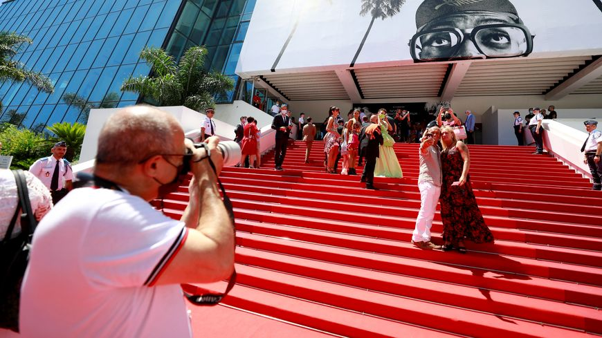

Mélina Amouri's blog
Bienvenue sur le blog de Mélina AMOURI
News quotidinnes sur la mode
Fashion blog
Le festival de Cannes
18/05/2002

De nombreuses stars étaient présentes aujourd'hui pour la première journée du Festival de Cannes de cette année avec des looks toujours aussi magnifiques et à couper le souffle.
Tom Cruise qui fait sensation !
20/05/2022

Tom Cruise remet 36 ans après la combinaison de pilote d’élite qui l’a fait star, dans Top Gun : Maverick de Joseph Kosinski, blockbuster avec un gros clin d’œil à L’étoffe des héros, signé Philip Kaufman (1983).
By Amouri Mélina, 2022